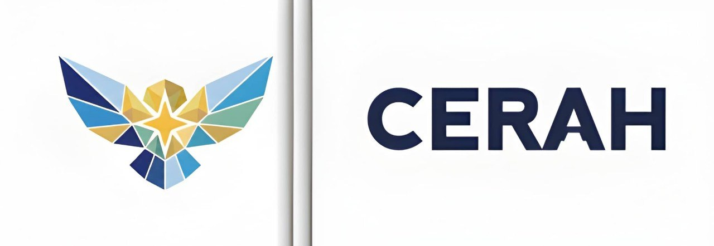

JIKOM-DKV
VOLUME 4, NOMOR 2, JUNI 2026

MELALUI DESAIN LOGO BARU
PADA PERUSAHAAN CERAH
Vol. 4, No. 2, Juni 2026, hlm. 125–134
E-ISSN: 2987-1234 | P-ISSN: 2987-5678
Perusahaan Cerah berjalan di sektor layanan edukasi digital. Belakangan persaingan makin ramai, dan logo yang dipakai selama ini sudah tidak begitu pas lagi. Tampilannya penuh, sulit terbaca begitu ukurannya dikecilkan, dan kurang luwes kalau harus tampil di layar ponsel atau media sosial. Penelitian ini mencoba menjawab persoalan itu dengan merancang ulang logo perusahaan. Harapannya, logo baru punya tampilan yang lebih bersih, modern, dan gampang dipakai di berbagai media tanpa menghilangkan jati diri perusahaan. Seluruh proses dikerjakan lewat pendekatan Design Thinking. Temuan di lapangan menunjukkan bahwa logo yang baru terbaca lebih jelas, lebih membekas di ingatan, dan bisa dipasang di banyak tempat. Pembaruan ini semoga bisa mengangkat wajah perusahaan agar tampak lebih profesional.
Kata Kunci: perancangan ulang, identitas merek, logo, desain visual, Design Thinking.
Perusahaan Cerah works in digital education. Lately competition has been getting busier, and its old logo no longer feels quite right. The design is crowded, hard to read once scaled down, and not flexible enough for phone screens. This study tried to answer that problem by redesigning the logo. The hope was to create something cleaner, more modern, and easier to use across all kinds of media, while still keeping the company's original character. The whole thing was done using Design Thinking. What came out is a logo that reads clearer, sticks in the mind longer, and works well on both screens and printed materials.
Keywords: redesign, brand identity, logo, visual design, Design Thinking.
I. PENDAHULUAN
Teknologi bergerak cepat beberapa tahun terakhir. Perubahan ini ikut menggeser cara perusahaan menyapa publiknya. Di lapangan digital, logo bukan cuma penanda biasa. Ia sudah jadi alat komunikasi yang ikut menentukan apakah orang akan memandang sebuah perusahaan punya mutu dan bisa diandalkan atau tidak (Wheeler, 2018). Maka dari itu, logo mesti tetap jelas dilihat, entah itu dicetak sebesar spanduk maupun diselipkan di sudut layar ponsel.
Perusahaan Cerah sendiri berjalan di atas fondasi teknologi. Sayangnya, logo yang ada sekarang terlalu banyak memuat detail. Waktu dipasang di antarmuka mobile, justru merepotkan. Pesan yang ingin disampaikan jadi tenggelam. Dari situ kemudian muncul pikiran buat merombak logo supaya lebih sederhana, bergaris tegas, dan tampil konsisten di mana pun (Rustan, 2019).
Penelitian ini cukup penting untuk dikerjakan. Identitas visual yang kuat bisa membangun rasa percaya, memudahkan orang mengingat merek, dan membuat pengalaman pengguna terasa lebih nyaman. Jadi, urusan membuat logo baru ini bukan sekadar mempercantik tampilan. Ada fungsi nyata yang ikut menopang kemajuan perusahaan.
II. TINJAUAN PUSTAKA
2.1. Identitas Merek di Dunia Digital
Identity branding sebetulnya adalah kumpulan elemen visual dan gagasan yang sengaja disusun untuk membentuk kesan orang terhadap suatu organisasi. Logo, warna, jenis huruf, sampai cara berkomunikasi, semuanya mesti sejalan. Dalam praktik desain sekarang, identitas yang baik paling tidak punya tiga ciri: gampang diingat, bisa dipakai di banyak tempat, dan sanggup mewakili nilai-nilai perusahaan (Wheeler, 2018).
Di dunia digital, logo biasanya jadi hal pertama yang dilihat pengguna. Identitas yang sederhana tetapi kuat cenderung lebih cepat nempel di kepala ketimbang yang sarat hiasan. Karena itulah strategi branding digital sangat menekankan soal kejelasan, keseragaman, dan kecocokan dengan media tempat logo itu muncul (Rowe, 2019).
Kalau semua elemen visual berjalan selaras, perusahaan akan terlihat lebih rapi dan terpercaya. Konsistensi semacam ini bikin orang makin yakin dan lebih gampang mengingat siapa perusahaan tersebut serta apa yang ditawarkannya (Kotler & Keller, 2016).
2.2. Keunggulan Format Vektor
Gambar berformat vektor semacam SVG punya satu kelebihan yang sangat terasa: dia bisa diperbesar atau diperkecil sesuka hati tanpa pecah atau kabur. Sifat ini sangat sesuai buat layar digital yang ukurannya macam-macam. Di samping itu, ukuran filenya kecil, jadi tidak memperlambat buka halaman (Pradana & Nugroho, 2021).
2.3. Pemilihan Huruf untuk Media Digital
Jenis huruf memegang peran penting dalam membentuk kesan dan kenyamanan membaca. Huruf sans-serif sering jadi pilihan buat tampilan di layar karena bentuknya bersih, sederhana, dan tetap terbaca meski ukurannya kecil (Saraswati & Kurniawan, 2023).
2.4. Psikologi Warna dalam Desain Merek
Warna punya kekuatan besar dalam menumbuhkan perasaan dan kesan di benak orang. Biru sering diasosiasikan dengan rasa percaya dan kemantapan, sementara kuning dekat dengan semangat serta optimisme. Perpaduan warna yang serasi bisa bikin logo kian menarik sekaligus mempertegas pesan yang ingin disampaikan (Rustan, 2019).
2.5. Metode Design Thinking dalam Desain
Design Thinking adalah cara merancang yang bertumpu pada kebutuhan manusia dan dikerjakan secara berulang sampai ketemu hasil yang pas. Ada lima langkah: memahami kebutuhan, merumuskan masalah, mencari gagasan, membuat purwarupa, dan menguji (Anggraini & Natasia, 2020).
2.6. Penelitian Sebelumnya
Hidayat dan Rahmawati (2022) pernah mengkaji pembaruan identitas visual dan menemukan bahwa penyederhanaan bentuk sangat meningkatkan kejelasan logo saat dipakai dalam ukuran kecil. Sementara itu, Pradana dan Nugroho (2021) menekankan pentingnya format vektor supaya mutu gambar tetap terjaga di semua resolusi.
III. METODOLOGI PENELITIAN
Penelitian ini menempuh metode Design Thinking. Alasannya, pendekatan ini memberi ruang luas untuk bereksplorasi, tetapi tetap runut dan fokus pada kebutuhan pemakai. Tiap langkah dikerjakan secara berurutan supaya desain yang dihasilkan tidak cuma enak dilihat, melainkan juga benar-benar berguna dan pas dipakai di lapangan (Anggraini & Natasia, 2020).
Metode ini terbilang cocok karena bisa menyeimbangkan sisi artistik dan tuntutan teknis. Dalam urusan desain logo, kita mesti memastikan bahwa hasil akhirnya tidak sekadar bagus, tetapi juga selaras dengan selera pengguna serta karakter media yang digunakan (Norman, 2013).
Langkah pertama menggali apa yang sebetulnya dibutuhkan pengguna dan seperti apa sifat media yang akan dipakai. Berikutnya, merinci kekurangan-kekurangan logo lama, khususnya soal kerumitan bentuk dan daya bacanya saat ukurannya kecil. Sesudah itu, dikumpulkanlah beragam ide dan sketsa baru dengan bentuk yang lebih ringkas.
Pengumpulan data dilakukan dengan mengamati serta membandingkan logo lama dan logo baru. Di samping itu, penulis juga berpegang pada prinsip-prinsip desain yang baik: keseimbangan, kesatuan, kontras, penekanan, dan proporsi agar hasilnya kokoh secara visual (Rustan, 2019).
IV. HASIL DAN PEMBAHASAN
4.1. Hasil Perancangan
Dari serangkaian proses yang sudah dijalani, didapatlah desain baru yang lebih banyak mengandalkan bentuk geometris sederhana serta komposisi yang seimbang. Bentuk yang ringkas ini memudahkan logo dipasang di pelbagai tempat, mulai dari ikon aplikasi, tajuk situs, sampai materi promosi (Hidayat & Rahmawati, 2022).
Dalam menentukan bentuk, diupayakan agar tetap ada nuansa resmi tetapi tidak kehilangan kesan ramah. Hal ini cukup penting mengingat perusahaan bergerak di bidang pendidikan, jadi harus memancarkan rasa terpercaya sekaligus tidak kaku. Wujud akhirnya disusun supaya bisa mewakili dua sisi itu sekaligus.

| Aspek | Logo Lama | Logo Baru |
|---|---|---|
| Kerumitan | Tinggi | Rendah |
| Jenis Huruf | Serif | Sans-serif |
| Format Berkas | Raster (PNG) | Vektor (SVG) |
| Ubah Ukuran | Terbatas | Sangat Baik |
| Kejelasan | Cukup | Jelas |
Secara umum, logo baru terasa lebih rapi, lebih modern, serta nyaman dilihat di layar apa saja. Peralihan dari gambar raster ke vektor juga membuat pemakaiannya jauh lebih leluasa (Pradana & Nugroho, 2021).
4.2. Makna Filosofis dan Visual
Tiap bagian dari logo baru ini dirancang dengan maksud tertentu: bentuknya mengisyaratkan komunikasi yang terbuka, garis yang tegas melambangkan kemantapan, dan kesederhanaannya mewakili kemudahan akses. Warna yang dipilih memberi nuansa optimistis namun tetap serius dan terpercaya (Rowe, 2019).
4.3. Penilaian Kelayakan
Penilaian dilakukan berdasarkan empat tolok ukur utama: tingkat kesederhanaan, konsistensi, keluwesan, serta daya tarik bentuk. Hasilnya, logo baru menang di semua poin dibandingkan logo lama. Ini menandakan bahwa tujuan awal penelitian sudah tercapai.
Karena bentuknya ringkas, logo ini gampang diletakkan bahkan di ruang yang sempit sekali pun. Konsistensi juga lebih mudah dijaga sebab tidak ada elemen yang saling bertabrakan. Di dunia digital, perkara ini krusial karena logo kerap tampil di tempat yang amat kecil, seperti ikon situs, tombol aplikasi, atau foto profil (Cooper et al., 2014).
4.4. Penerapan di Berbagai Media
Logo baru ini bisa dipakai di situs web, aplikasi, spanduk, hingga bahan cetakan tanpa perlu banyak penyesuaian. Kemudahan ini jelas menguntungkan karena memangkas waktu pembuatan materi promosi (Hidayat & Rahmawati, 2022).
4.5. Dampak pada Citra Perusahaan
Identitas visual yang tertata punya andil besar dalam membentuk pandangan orang terhadap perusahaan. Logo yang baik memberi isyarat bahwa perusahaan itu cermat, berkualitas, dan konsisten (Kotler & Keller, 2016).
4.6. Hubungan Bentuk dan Kegunaan
Desain yang baik selalu mempertemukan keindahan dan fungsi. Logo yang sekadar cantik tetapi sukar dipakai tidak banyak manfaatnya. Sebaliknya, logo yang sederhana, luwes, dan jelas akan sangat berguna untuk jangka panjang (Norman, 2013).
4.7. Analisis Kelayakan Teknis
Dilihat dari sisi teknis, desain baru ini sangat layak dipakai di mana-mana. Bentuknya sederhana sehingga gampang direproduksi, warnanya lentur, dan tetap terlihat jelas di latar belakang terang ataupun gelap.
4.8. Keterbatasan Penelitian
Meski hasilnya sudah jauh lebih baik, masih ada sejumlah hal yang bisa dikembangkan lagi. Salah satunya adalah perlunya pengujian yang lebih luas dengan melibatkan banyak pengguna sungguhan (Hidayat & Rahmawati, 2022).
V. PENGEMBANGAN LEBIH LANJUT
Perancangan ulang ini tidak mesti berhenti pada satu logo saja. Ke depan, bisa dikembangkan menjadi sebuah sistem panduan lengkap yang mencakup aturan pemakaian logo, warna utama dan pendamping, jenis huruf resmi, serta tata letak ukuran (Wheeler, 2018).
5.1. Panduan Penggunaan
Panduan itu nanti akan memerinci hal-hal seperti jarak aman logo dari elemen lain, ukuran paling kecil yang masih diizinkan, dan aturan pakai warna (Rustan, 2019).
5.2. Adaptasi di Berbagai Platform
Logo yang dibuat untuk zaman digital harus siap dipakai di pelbagai tempat. Di situs, ia wajib jelas di bagian tajuk maupun ikon kecil. Di media sosial, ia mesti tetap terbaca walaupun ukurannya ringkas (Rowe, 2019).
VI. KESIMPULAN DAN SARAN
6.1. Kesimpulan
Dari semua yang sudah diuraikan, bisa ditarik kesimpulan bahwa pembaruan identitas visual Perusahaan Cerah berhasil melahirkan logo baru yang jauh lebih sederhana, luwes, dan profesional. Seluruh proses menjadi teratur berkat pemakaian metode Design Thinking.
Logo baru menunjukkan kemajuan nyata di lima hal pokok: bentuk tidak lagi penuh dan rumit, memakai jenis huruf yang lebih kontemporer, disimpan dalam format vektor, leluasa diubah ukurannya, dan wujudnya lebih gamblang ketimbang logo sebelumnya.
6.2. Saran
Dari hasil penelitian ini, sejumlah saran bisa diajukan: (1) Penelitian berikutnya sebaiknya menguji langsung logo ini kepada pengguna sungguhan lewat survei agar hasil penilaiannya lebih lengkap dan terukur. (2) Penyusunan panduan identitas sebaiknya mencakup aturan warna, huruf, dan tata cara membuat materi promosi. (3) Perlu dicoba pemakaian logo di aneka jenis media untuk memastikan tampilannya tetap seragam. (4) Bisa juga dikembangkan variasi logo supaya makin luwes penggunaannya.
DAFTAR PUSTAKA
- Anggraini, S., & Natasia, S. R. (2020). Pengembangan antarmuka pengguna aplikasi mobile menggunakan metode Design Thinking. Jurnal Teknologi Informasi dan Komunikasi, 12(1), 45–56.
- Cooper, A., Reimann, R., & Cronin, D. (2014). About Face: The Essentials of Interaction Design (4th ed.). Wiley.
- Hidayat, R., & Rahmawati, A. (2022). Perancangan ulang identitas visual dalam meningkatkan citra merek platform digital. Jurnal Desain Komunikasi Visual, 8(2), 112–125.
- Kotler, P., & Keller, K. L. (2016). Marketing Management (15th ed.). Pearson Education.
- Norman, D. A. (2013). The Design of Everyday Things (Revised ed.). Basic Books.
- Pradana, A. W., & Nugroho, S. (2021). Penerapan format grafik vektor SVG untuk optimalisasi performa rendering antarmuka web responsif. Jurnal Informatika dan Komputer, 9(3), 78–89.
- Rowe, M. (2019). Visual Identity Systems for Digital Brands. Design Press.
- Rustan, S. (2019). Mendesain Logo. Gramedia Pustaka Utama.
- Saraswati, D. K., & Kurniawan, H. (2023). Analisis keterbacaan tipografi sans-serif pada layar perangkat seluler. Jurnal Desain dan Komunikasi Visual, 10(1), 33–44.
- Wheeler, A. (2018). Designing Brand Identity (5th ed.). Wiley.